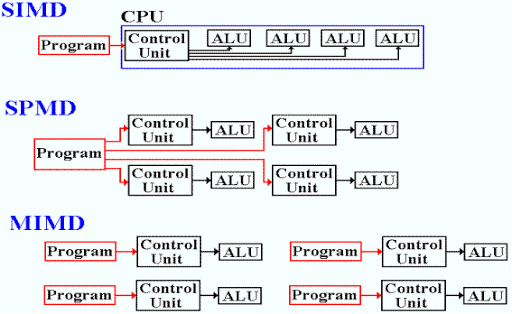
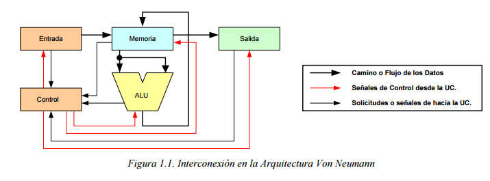

4.1 Aspectos básicos de la computación paralela
La computación paralela busca dividir tareas grandes en tareas más pequeñas que se ejecutan simultáneamente en varios procesadores. Esto mejora el rendimiento y reduce el tiempo de procesamiento.
Conceptos clave:
Procesamiento paralelo: Ejecutar varias operaciones simultáneamente.
Procesador: Unidad que realiza los cálculos. Puede ser una CPU o GPU.
Hilos (threads): Subprocesos dentro de un programa que pueden ejecutarse en paralelo.

4.2 Tipos de computación paralela
4.2.1 Clasificación
Se clasifica según la estructura del hardware o el modelo de programación:
SISD (Single Instruction, Single Data): Una sola instrucción trabaja sobre un solo dato.
SIMD (Single Instruction, Multiple Data): Una instrucción trabaja en paralelo sobre varios datos.
MISD (Multiple Instruction, Single Data): Varias instrucciones trabajan sobre un único flujo de datos.
MIMD (Multiple Instruction, Multiple Data): Varias instrucciones trabajan sobre diferentes datos en paralelo.

4.2.2 Arquitectura de computadoras secuenciales
Computadoras secuenciales: Procesan una tarea a la vez en un único flujo de control.
Ejecución de instrucciones sigue un flujo lógico paso a paso.

4.2.3 Organización de direcciones de memoria
Memoria compartida: Todos los procesadores acceden a un espacio común.
Memoria distribuida: Cada procesador tiene su propia memoria y se comunican entre sí.
Memoria jerárquica: Combina memoria rápida y lenta para optimizar la velocidad de acceso.
4.3 Sistemas de memoria multiprocesadores
4.3.1 Redes de interconexión dinámica (indirecta)
Redes que conectan procesadores y memoria mediante conmutadores que cambian las rutas según la necesidad.
Ejemplo: Redes tipo Banyan, Omega o Crossbar.
Permiten comunicación eficiente entre varios procesadores y la memoria.
4.4 Sistemas de memoria distribuida
4.4.1 Redes de interconexión estáticas
Redes con conexiones fijas entre procesadores, sin conmutadores.
Ejemplo: Topologías como anillo, malla, hipercubo.
Ofrecen alta predictibilidad y escalabilidad.
4.5 Casos para estudio
Supercomputadoras: Usan procesamiento paralelo para cálculos complejos (ejemplo: predicciones climáticas).
GPU (Unidades de Procesamiento Gráfico): Optimizadas para tareas de paralelismo masivo como gráficos y aprendizaje automático.
MapReduce: Modelo de programación paralelo para procesamiento de grandes volúmenes de datos en clústeres.